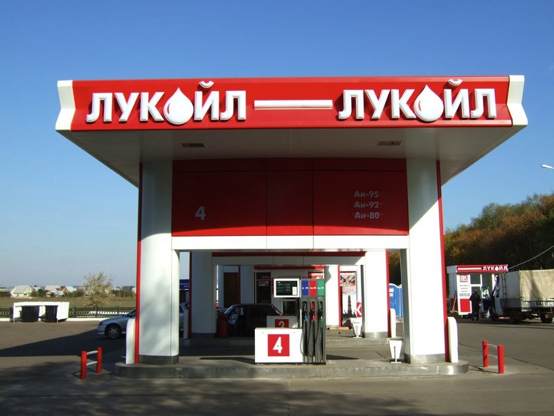
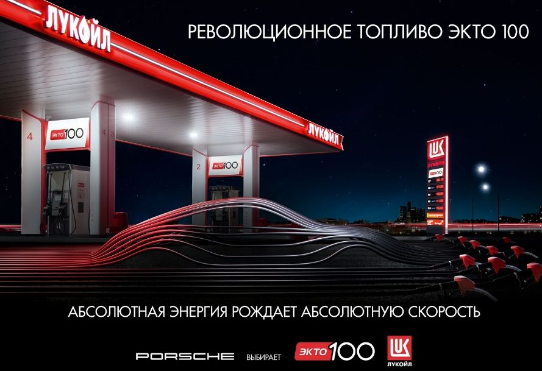

Лукойл - Плохое качество бензин аи - 92 экто - отзывы сотрудников
 Отзывы Проверить компанию FAQ О нас Контакты Добавить отзыв
Поиск отзывов
отзывы о компании, отзывы о сотрудниках, отзывы о магазине
Добавить отзыв
Результаты поиска
2015-07-29 | Просмотров [1564] 0 0Лукойл - Плохое качество бензин аи - 92 экто
Положительные стороны
Всем здравия. Заправил в понедельник полный бак АИ-92 на АЗС Лукойл пр. Культуры - выезд на КАД. Периодически загорается чек. 100% бодяги ливанули!
Отрицательные стороны
нет
http://huzhe.net/complaints/lukojl-c67837.html#comments Пожаловаться ! информация для представителей компании ? пошаговая инструкция для самостоятельной проверки компании все отзывы о компании
Для добавления информации, пожалуйста, авторизуйтесь.
Авторизация / регистрация
Отзывы о компании
20.03.2020 | положительный отзыв 0 0 Отзыв : ЛукойлПостоянно заправляюсь на Лукойле. Цены не выше чем у других заправок. Удобно, что есть персонал, который помогает заправляться, это значительно экономит время. Единственный минус - это очереди на кассе, если бы добавили еще кассиров, заправка была бы очень быстрой. Девочки молодцы, всегда предложат кофе.
Россия, Березники, Карла Маркса
Подробнее Просмотров [93] Пожаловаться 14.02.2020 | положительный отзыв 0 0 Лукойл
Отрицательные стороны :
Возможно неоднократный просмотр этого видео менеджерами лукойла. Поднимет на нужный, правильный, высокий, уровень работу этой организации. Дейл Карнеги — «Секрет общения с людьми». Дейл Карнеги — «Основные Приёмы Управления Людьми».
Россия, Санкт-Петербург
Подробнее Просмотров [131] Пожаловаться 12.02.2020 0 1 Лукойл
Отрицательные стороны :
Ужасный коллектив. Обучения 0, сиди делай как хочешь, постоянные сплетни, все друг друга молча ненавидят. Нет субординации открывают дверь с ноги и начинают орать на весь кабинет. Не посоветовала бы никому ! За месяц ушло 12 человек !! Это уже о чем то говорит !
Россия, Нижний Новгород
Подробнее Просмотров [67] Пожаловаться 11.07.2016 0 0 Отзыв пользователя аноним о компании Лукойл Отрицательные стороны :
работаешь как лошадь.не ценят.зарплата мизер по сравнению с работай. а кто ворует и нагло в глаза улыбается далеко пойдет...карьерного роста нетууу
Московская Область
Подробнее Просмотров [72] Пожаловаться 31.07.2016 0 0 Отзыв пользователя Александр о компании Лукойл Отрицательные стороны :
Я хочу сказать о работе на Пякяхинском месторождении. Бытовые условия проживания в общежитиях отвратительные. Куда только смотрит администрация УСО, руководителей которой давно пора поменять. Расскажу вкратце, вода подается по определенному графику , вечером очередь в коридоре, с перебоями вся сантехника старая пол грязный и ремонт видимо делался 10 лет назад вся керамическая плитка со сколами. Еще одна интересная деталь что администрация допускает проживание жильцов в коридоре где сквозняк и многие люди получили заболевание спины после такой ночлежки , . Даже если люди живут в комнатах то как на
Екатеринбург
Подробнее Просмотров [73] Пожаловаться 26.08.2016 0 1 Отзыв пользователя Николай о компании Лукойл Положительные стороны :
Здравствуйте! Ездил с семьёй на авто с Урала-до Анапы. Благодарен персоналу "Лукойл" на протяжении всей трассы !! Дадут кипятка для заварки детям кашек и мытья фруктов, а акции "кофе на халяву" вообще прекрасны. Персонал же других заправок - не хотят слушать просьбу, не дают доступ к розетке для электрочайника, сразу "отшивают" и прекращают общаться ! Благодарен Вам, милые работницы "Лукойла" !!!!!!!
Пермь
Подробнее Просмотров [87] Пожаловаться 01.09.2016 0 0 Отзыв пользователя Данилова Яна о компании Лукойл Отрицательные стороны :
Проработала в компании почти 2 года.В коллективе есть воры,но менеджер не предпринимает никаких мер!!!Каждый месяц за что-то приходится отдавать из зарплаты.Решила уволиться так мне приписали фальшивую 5000,хотя я в эту смену даже и не работала.В бухгалтерии сказали что бы я выбивала эти деньги через службу безопасности,но результата никакого(((Теперь я не могу устроиться никуда,потому что территориальный менеджер дает обо мне негативную информацию.Бог им судья!!!!!!!!
Владимир
Подробнее Просмотров [89] Пожаловаться 08.09.2016 0 0 Отзыв пользователя Александр о компании Лукойл Отрицательные стороны :
руководители головной компании по сути разваливают экономику страны в части нефтехимии. вся продукция российским производителям перепродается через компании, принадлежащие более чем на 90 % иностранным государствам. в итоге вся полимерная продукция имеет завышенную стоимость. плюс существует сговор между производителями полимеров, ни на одном предприятии страны, производящем полимерное сырье, нельзя купить это сырье напрямую у производителя, все прикрываются мнимой экономической стратегией. на самом деле все маркетинговые прогнозы фальсифицированы, иначе как может быть, что сырье для производства закупается через фирмы, имеющие прямое отношение к руководству головной компании, и продается продукция
Москва
Подробнее Просмотров [103] Пожаловаться 02.05.2017 0 0 Отзыв пользователя Мур о компании Лукойл Отрицательные стороны :
За последние годы на Лукойле стало невыносимо работать. 1. Нет ничего, что могло бы способствовать уменьшению краж на АЗС. Воруют покупатели, платят операторы. 2. Нет персонала для уборки туалета и зала. Делают эту работу операторы.( Не доплачивают). 3. Работать за кассой 12 часов стоя. 4. Взыскания по любому поводу, поощрения только на день нефтяника. 5. Тайный покупатель. Благодаря которому ты приходишь на работу и все 12 часов разговариваешь с покупателями по написанной схеме. Если пройдёшь, доплаты нет, не пройдёшь- лишение премии. 6. Обед неоплачиваемый один час, но тебе не удаётся воспользоваться этим часом. (
Мурманск
Подробнее Просмотров [65] Пожаловаться 23.06.2017 0 0 Отзыв пользователя Маргарита о компании Лукойл Положительные стороны :
Высшее образование. Армавирский лингвистический социальный институт ,Специальность бухгалтерский учет, анализ и аудит. Опыт работы: 2005 и по настоящее время ОАО Агропромышленный строительный комбинат "Гулькевичский". 2005-2011 Лаборатория, оператор ,2011-2013 Бухгалтерия ,бухгалтер расчетного отдела, 2013-2017 ведущий бухгалтер центрального отдела бухгалтерии, Знание офисных и бухгалтерских программ 1С:Предприятие,оформление и заполнение всей приходной и расходной документации ,составление кассовых документов и т.д. Семейное положение: Замужем , двое детей ( 15лет, 10 лет). Водительское удостоверение "В", личный автотранспорт. Личные качества: Внимательность ,аккуратность, тактичность, обучаемость, ответственность, общительность .
Гулькевичи
Подробнее Просмотров [73] Пожаловаться 07.07.2017 0 0 Отзыв пользователя Юлия о компании Лукойл Положительные стороны :
Работаю в этой структуре довольно давно. Перспектив роста нет, если есть знакомства в компании, то можно ничего не делать вообще, поскольку никто премии не лишит и будут только повышать оклад из года в год, что приятно. По-хорошему можно всех уволить и компания ничего не потеряет поскольку в каждом отделе по 2-3 рабочие лошадки со стороны имеются.
Москва
Подробнее Просмотров [124] Пожаловаться 01.09.2017 0 0 Отзыв пользователя Автомойщики о компании Лукойл Отрицательные стороны :
Начинают обманывать с момента размещения вакансий на сайтах, обещают зарплату 25 000 руб. на руки, но этих денег вы не увидите. Мы получаем 17 000 на руки, оплата сдельная, оклада нет. Начальство только говорит, что у компании тяжелое финансовое положение и просят подождать и потерпеть. Развита система штрафов, которые оплачивают сами сотрудники (угрожают юристами лукойла), заставляют подписывать документы на вычеты из зарплаты. Таким образом начальство ремонтирует торговый центр (откачать гавно на мойке, починить ворота, купить форму для сотрудников и т.д.). Деньги выделяются и компания Лукойл не бедная, нефть качаем,
Москва
Подробнее Просмотров [71] Пожаловаться 05.09.2017 0 0 Отзыв пользователя Александр о компании Лукойл Отрицательные стороны :
Безграмотный высокомерный региональный сталкивающий лбами сотрудников, по принципу разделяй и властвуй. Интриган и подлец. Кроме того человек украл у ЛУКОЙЛа огромные деньги , но до сих пор успешно отсиживается в ссылке Астраханской
Астрахань
Подробнее Просмотров [72] Пожаловаться 22.09.2017 0 1 Отзыв пользователя Юлия о компании Лукойл Отрицательные стороны :
Заправщикам не платят зарплату,значит на работу ходи,а платить не хотят.на носу 22сентября а зарплату за июль даже не заплатили ещё.полный бардак.и кто там работать то будет,мало того зарплата 10тыс руб.и те выплатить не могут.ПОЗОР.такая компания большая,а толку ноль.
Московская Область
Подробнее Просмотров [126] Пожаловаться 06.03.2018 0 0 Отзыв пользователя Светоана о компании Лукойл Отрицательные стороны :
Устроилась на Лукойл Москва ( издевательства над новенькими старыми сотрудниками, дедовщина) приезжаю домой в истерике после каждых суток/ неужели нет управы. скорее прийдется уволиться...
Москва
Подробнее Просмотров [94] Пожаловаться 15.03.2018 0 0 Отзыв пользователя Евгения о компании Лукойл Отрицательные стороны :
Рабский труд, издевательство над работниками, людей не ценят, большая текучка, работников не хватает, если не прошёл тайного покупателя два раза то ЗАСТАВЛЯЮТ писать заявление на увольнение. Условия труда никакие, туалета нет ( приходиться ходить в холодный туалет на улице, если он работает, и это в 21 веке) вода техническая или её вообще нет, а на АЗС продают продукты питания (булочки которые операторы сами готовят) куда смотрит Роспотребнадзор, это нарушение всех санитарных норм! Никакого карьерного роста, он есть только для своих. Руководство никакое, тешит своё самолюбие, издевается над работниками и
Челябинск
Подробнее Просмотров [106] Пожаловаться 19.05.2018 0 0 Отзыв пользователя Аноним о компании Лукойл Отрицательные стороны :
Рабский труд. Зарплата не растёт. Руководство относится к сотрудникам омерзительно. Условия труда никакие, стоять по 12 часов, сидеть нельзя. Переработки постоянные. Как рабы на галерах.
Выборг
Подробнее Просмотров [91] Пожаловаться 12.12.2018 0 0 Отзыв пользователя Ольга о компании Лукойл Отрицательные стороны :
Не справедливое отношение к работникам АЗС с магазинами, постоянные недостачи по магазину и придирки руководства. Оператор АЗС 257 Яланская Светлана оператор АЗС без магазина, во всеуслышание рассказывает о прелестях своей работы ( обналичивание топливных карт Ликард организаций за откаты, использование накопительных карт в личных целях, продажа топлива через водителей бензовозов и т.д). С её слов главное состоять в отношениях с начальством и всё будет в норме, можно воровать! Страшная несправедливость!.
Краснодар
Подробнее Просмотров [69] Пожаловаться 29.01.2019 0 0 Отзыв пользователя Дмитрий о компании Лукойл Положительные стороны :
Меня все устраивает)))руководство и коллеги норм
Казань
Подробнее Просмотров [74] Пожаловаться 11.02.2019 0 0 Отзыв пользователя Алексей о компании Лукойл Отрицательные стороны :
Являюсь бывшим сотрудником компании работал водителем бензовоза. Директор с колонным просто мошенники. Автомобили все на гарантии и обслуживание происходит у дилеров, а эти умельцы производят ремонт за счёт водителя (в левых гаражах, чтобы никто не знал) мне объявили за ремонт ценник в три раза дороже, причём деньги просили сразу и наличкой, это вся моя месячная зарплата. Я вынужден был уволиться сам по собственному желанию так как у меня не было возможности отдать им свои заработанные деньги. Работал в санкт-петербурге (ЛАНТА). Вестерн петролеум транспортэйшн. Мои пожелания срочно поменять руководство.
Санкт-Петербург
Подробнее Просмотров [129] Пожаловаться ... Еще отзывы по теме...Вернуться к списку
О нас
ReTWORK - быстрый поиск отзывов о компании, магазине, сотруднике, работодателе в интернете. Сайт не несет ответственности за информацию полученную со сторонних ресурсов.
© 2015-2020 XДополнительных отзывов о компании не найдено. Вы можете воспользоваться нашим расширенным поиском.
Запустить поиск | Закрыть
Закрыть
Сообщение
Отправить Закрыть
x Показать негативные >